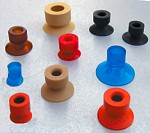
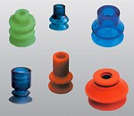
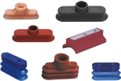
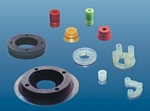
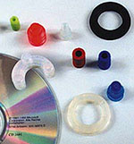
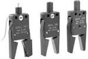

吸着パッドの選定と供給
そのワーク、
どのパッドで吸いますか。
大谷技研はドイツFIPA社の製品を扱っています。FIPA社の吸着パッドは2万種類を数え、世界一の品揃えを有しています。その中から、お客様のワークに合うものを選んでお届けするのが当社の仕事です。
傾いたワーク、紙のような薄物、油の付いた部品、CDのように穴のあいたもの。形と条件が違えば、必要なパッドも変わります。少ない数量からお気軽にご相談ください。

フラット
ベローズ
オーバル
CD用
特殊形状
グリッパ
各種吸着パッド
12のタイプ。
φ1mm から φ200mm まで。
特徴に応じてタイプを選んでください。ここで紹介したもの以外にも多くの種類を保有しています。
| タイプ | 特徴 | サイズ・種類数 |
|---|---|---|
| フラットパッド | 標準的な吸着パッド。特に平坦なワークの吸着に適しています。 | φ1 〜 φ200／23種類 |
| 1.5段ベローズパッド | 傾いているワークの吸着も可能。ワークの高さ方向のバラツキを吸収できます。 | φ10 〜 φ110／8種類 |
| 2.5段ベローズパッド | 1.5段より深いストローク。傾きとバラツキの吸収に対応します。 | φ5 〜 φ88／10種類 |
| 3.5段ベローズパッド | さらに深いストロークが必要な場合に。 | φ18・φ25／2種類 |
| 薄リップベローズパッド | リップ部が薄いためワークへの密着がよく、傾いたワークや平坦でないワークにも対応。 | φ10・φ15／2種類 |
| オーバルパッド | リードフレームやICなど長方形のワークで、有効吸着面積を増やせます。 | 2×4 〜 8×30／14種類 |
| 薄リップフラットパッド | リップ部が非常に薄くパッド面が平ら。薄物ワークにシワが発生しにくい。紙や薄物向け。 | φ10・φ15・φ20／3種類 |
| 薄物用パッド | 柔らかい材料を使用（天然ゴム 硬度40度）。クリーツで有効吸着面積を確保します。 | φ30・φ33／2種類 |
| こわれもの用パッド | 長い首とカップ上部の凹部により柔軟性があり、壊れやすいワークに適します。 | φ6 〜 φ25／4種類 |
| 油用パッド | カップ内部のクリーツでワークの横滑りを防止（材質 NBR）。油の付着したワーク向け。 | φ10 〜 φ50／5種類 |
| CD用パッド | CDやDVDなど中心に穴のあいたワーク向け。フラット状・リング状・三日月状。 材質：シリコン、導電性シリコン | 15種類 |
| 丸棒用パッド | 小径棒状のワーク用。 | 適応棒径 φ9 〜 φ32／4種類 |
それぞれの吸着パッドには、配管接続およびサポート用の継手と金具が用意されています。
技術情報 ─ 材質
ゴムを間違えると、
すぐ駄目になります。
主要な吸着パッド材質の特性です。ニトリルゴムとシリコンゴムは多くの種類のパッドで選択できます。パッドのタイプと大きさによって選べる材質が異なります。
| 材質 | ニトリル ゴム |
導電性 ニトリルゴム |
シリコン ゴム |
導電性 シリコンゴム |
天然 ゴム |
ポリウレタン ゴム |
フッ素 ゴム |
|---|---|---|---|---|---|---|---|
| 材質記号 | NBR | NBR-AS | Si | Si-AS | NR | PUR | FKM |
| 材質 No. | 1 | 1-AS | 2 | 2-AS | 3 | 5 | 7 |
| 標準硬度 Hs | 50 | 70 | 50 | 55 | 70 | 50 | 50 |
| 標準色 | 黒 | 黒 | 透明 | 黒 | 黒 | 青 | 灰色 |
| 使用温度範囲 | -40〜90℃ | -10〜60℃ | -70〜200℃ | -20〜130℃ | -40〜80℃ | -25〜80℃ | -20〜200℃ |
| 機械的特性 | |||||||
| 引張強度 | ○ | ○ | × | × | ○ | ◎ | △ |
| 耐摩耗性 | ○ | ○ | △ | △ | ◎ | ◎ | ○ |
| 最高伸び | ○ | ○ | × | × | ◎ | ○ | × |
| 化学特性 | |||||||
| 耐油性 | ◎ | ◎ | ○ | ○ | × | ◎ | ◎ |
| 耐候性 | △ | △ | ◎ | ◎ | △ | ◎ | ◎ |
| 耐ガソリン性 | ◎ | ◎ | × | × | × | ◎ | ◎ |
| 適応分野とワーク | |||||||
| 食品分野 | — | — | 適 | — | — | — | — |
| 高温のワーク | — | — | 適 | 適 | — | — | 適 |
| 低温のワーク | 適 | — | 適 | 適 | — | — | — |
| 重いワーク | — | — | — | — | — | 適 | — |
| 油付ワーク | 適 | 適 | — | — | — | 適 | 適 |
◎ 優れている ○ よい △ あまりよくない × 悪い
- NBR耐油性が高い
- Si高度の耐熱性と耐寒性に優れる
- NRゴム弾性にすぐれ耐摩耗性がよい
- PUR機械的強度が高い、耐摩耗性がよい
- FKM最高の耐熱性と耐薬品性を有する
技術情報 ─ 吸着力
必要な面積は、
計算で出せます。
1
搬送に必要な吸着力
ワークを吸着して搬送する場合、必要な吸着力は吸着の向きで変わります。ワークを垂直に吸着して上方に加速度をもって搬送する場合と、水平に吸着して上方に搬送する場合では、後者のほうが摩擦係数の分だけ吸着力を多く必要とします。
2
有効パッド面積
吸着力は、有効パッド面積 × パッド内到達圧力（ゲージ圧）で求まります。この関係に必要吸着力の式を代入すると、吸着搬送に必要な有効パッド面積が求まります。
計算式と図は原資料に掲載されています。具体的なワークでの計算はお問合せください。
技術情報 ─ 応答
吸わない、遅い、
の原因は配管かもしれません。
通気性・粗いワークで吸着力が出ない
通気性のあるワークや表面の粗いワークを吸着する場合、漏れ流量が大きくなり、必要なパッド内到達圧力が得られないことがあります。
このとき到達圧力は、エジェクタの流量特性と配管の圧損で決まります。最大吸込流量が少ないタイプは、少ない漏れ流量でも真空圧力が大きく低下します。漏れ流量が大きいときは、最大吸込流量の大きなタイプを選択する必要があります。
漏れが大きい場合で到達圧力（したがって吸着力）を確保したいときは、太い配管が効果的です。
吸着応答が遅い
吸着応答時間（供給弁を作動後、パッド内圧力が到達圧力に達するまでの時間）の時定数は、配管側の項とエジェクタ側の項の和で求まります。通常の仕様ではエジェクタ側が支配的です。
配管側の項は配管径を大きくすると減少しますが、支配的なエジェクタ側の項は容積増加によって大きくなるため、全体としては配管径を太くすると時定数は増加します。
応答を速くするには、最大吸込流量の大きなエジェクタを選ぶことと、内容量を少なくする（配管径を細く、短く）ことが効果的です。
吸着力の確保と応答速度は、配管径について逆の方向を要求します。どちらを優先するかはワークによります。ご相談ください。
使用事例
こんなものを吸っています。
- プリント基板
ハンダのない部分を対角線状に2箇所吸着する。
- 自動車の部品
ロボットの先端に吸着パッドのセットが搭載されている。
- 板金
板金を吸着パッドで吸着し、パイプ状に接合する。ロボットの交換ヘッドに吸着パッドが3個搭載されている。
- ダンボール箱
吸着パッドがロボットに搭載されている。
- ボトル
白い部品を案内として、吸着パッドがボトル頭部の平らなキャップを吸着し搬送する。シリコンゴム製の吸着パッドを使用。
- 自動車のフロントガラス
フロントガラスをロボット搭載の吸着パッドで吸着し、搬送する。
よくあるご質問
はじめての方へ
少ない数量でも購入できますか。
少ない数量からお気軽にご相談ください。メール便でのお届けにも対応しています。
どのパッドを選べばよいか分かりません。
ワークの材質・形状・重さ・表面状態をお知らせください。傾いたワークにはベローズパッド、紙や薄物には薄リップフラットパッド、油の付いたワークには油用パッドといった形で、条件からお選びいただけます。吸着力の計算に必要な有効パッド面積の求め方も技術情報に掲載しています。
食品や高温のワークにも使えますか。
シリコンゴム（Si）が食品分野に適し、使用温度範囲は -70〜200℃ です。フッ素ゴム（FKM）も -20〜200℃ で最高の耐熱性と耐薬品性を持ちます。詳しくは材質の比較表をご覧ください。
通気性のあるワークや表面の粗いワークは吸着できますか。
漏れ流量が大きくなり、必要なパッド内到達圧力が得られないことがあります。この場合は最大吸込流量の大きなエジェクタを選択し、配管を太くすることが効果的です。
吸着の応答を速くしたいのですが。
最大吸込流量の大きなエジェクタを選択することと、内容量を少なくする（配管径を細く、短くする）ことが効果的です。時定数はエジェクタ側の項が支配的になります。
会社案内
大谷技研株式会社
- 会社名
- 大谷技研株式会社
- 代表者
- 大谷 圭三
- 所在地
- 〒243-0203 神奈川県厚木市下荻野442
- 事業内容
- 吸着パッドの輸入販売
FA機器の輸入販売
空気圧機器の開発販売
センサの開発販売
メカトロ機器の受託設計
ワークを教えてください。
材質・形状・重さ・表面の状態が分かれば、2万種類の中から候補をお出しできます。少ない数量からお気軽にどうぞ。